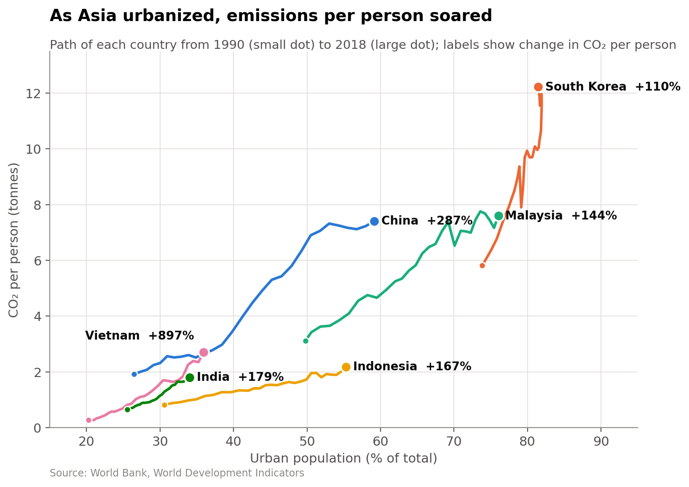
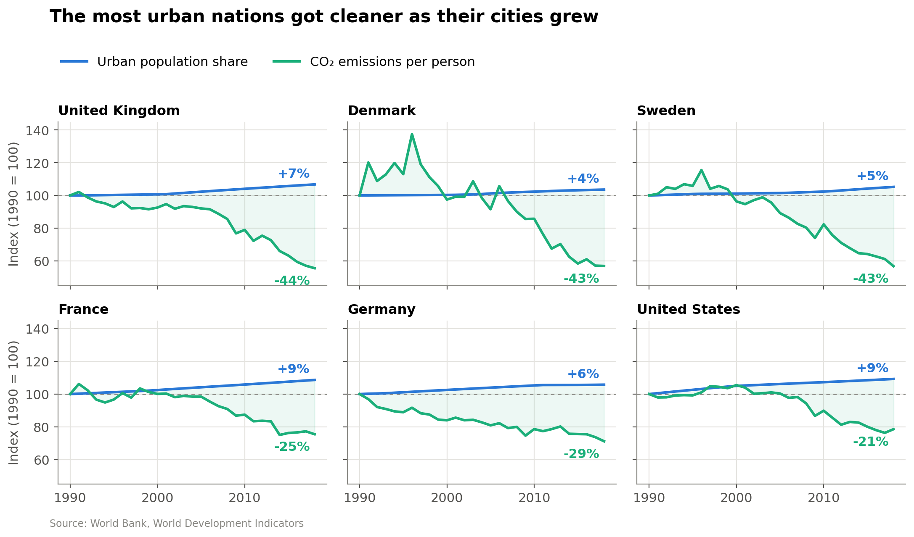

Proposition: Countries are getting worse on emissions as they urbanize.
Both visualizations use the IMF/World Bank Climate Change Indicators dataset and measure emissions the same way, as CO₂ per person, so the two sides can be compared directly. Each design decision is scored from −2 (deceptive) to +2 (earnest).
FOR the Proposition

Design Decisions and Rationale:
- +1.5Connected scatter with urbanization on the x-axis. Each country's path ties emissions directly to urban share, so the reader sees "move right, go up." Axes are labeled with units and the y-axis starts at zero. Paired time-series charts were the alternative, but they make the reader compare two charts at once.
- −1.5Cherry-picked countries. We show only six Asian urbanizers whose emissions grew, but 42 of the 134 countries that urbanized since 1990 saw CO₂ per person fall. Showing all countries in the background would have exposed those paths.
- −1Percent-change labels. Vietnam's "+897%" is only 0.27 → 2.7 t, while South Korea added 6.4 t but shows "+110%." Percentages make small starting values look alarming. Labeling tonnes added would be more honest.
- −1A title that generalizes. "As Asia urbanized…" turns six countries into a continent and leaves out Japan, which went from 77% to 92% urban with flat emissions. "Soared" is strong but stays factual enough not to look biased.
- +0.5Window starts in 1990. 1990 is the standard climate-policy baseline, so it is defensible. It also catches these economies just before their fastest industrial growth, which steepens every path.
AGAINST the Proposition

Design Decisions and Rationale:
- +1.5Same metric as the other side. Both charts use CO₂ per person, so neither side wins by switching units. An earlier draft used CO₂ per dollar of GDP, which falls almost everywhere but answers a different question.
- −1Indexing both series to 1990 = 100. Indexing puts different units on one scale. But these countries were already 73–85% urban, so their urban line barely moves and the chart overstates how much they urbanized. Plotting raw urban share would show how little room they had left.
- −1.5Country selection. All six are wealthy, already-urban Western countries, the only group whose median emissions fell. South Korea was just as urban, but its emissions doubled, so it is left out, along with every country that urbanized from a low base.
- −0.51990 baseline and shaded gap. Germany's 1990 value includes East German industry that collapsed after reunification, which inflates its drop. The green fill makes the gap between the lines feel larger than the labels alone would.
- +1Small multiples with direct labels. Shared axes avoid a tangle of overlapping lines, and the endpoint labels (+7% / −44%) let readers check the claim directly. A dashed 100 line and a single legend keep the panels consistent.
Final Reflection
We started with four candidate charts, two per side. Our first "for" chart overlaid world urbanization and total CO₂ on a dual axis, and our first "against" chart used carbon intensity. Feedback at the checkpoint pointed out that these charts overplotted, and that the two sides used different metrics, so comparing them was apples to oranges. A total-emissions chart mostly reflects population growth, and a per-dollar chart mostly reflects GDP growth. Switching both sides to CO₂ per person made the debate fairer, and it also made it harder to deceive, because we could no longer win by choosing a convenient unit.
What surprised us was how little deception the final charts needed. Neither chart truncates an axis, and every number shown is correct. Most of the persuasive work comes from choosing which countries to show and how to express change. The "for" chart reports percentages that inflate small starting values. The "against" chart indexes urban share for countries that had almost no room left to urbanize. The same dataset supports both stories because the underlying relationship is mixed. Urbanization tracks higher emissions across countries, largely through income, but within a single country the link is weak.
To us, an ethical visualization is one where a reader who knows what was left out would still agree with the main takeaway. Persuasion is acceptable when it decides emphasis: a title that states a conclusion, color that highlights the key series, or a metric that is defensible and disclosed. It becomes misleading when the design depends on the viewer not knowing something, such as that the countries were filtered to fit the story or that a percentage hides a tiny absolute change. Our rough test is whether the chart would survive adding back the data we removed. Neither of ours fully would, which is why both selection decisions scored −1.5.